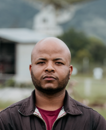

About ADA
Astronomy Dissemination in Africa (ADA) is dedicated to promoting astronomy awareness, education, and research across Africa. Through outreach, collaboration, and innovation, ADA connects African youth and scholars with the universe’s vast knowledge.
Founding Members
Member Name
President
Brief bio or description about Virginia Bila here.
Vice President
Nelson Pedro
Nelson Pedro is the Vice President of the Association for the Dissemination of Astronomy in Africa (ADAA), with a degree in Chemistry from Eduardo Mondlane University (UEM). With a background in science communication, youth empowerment, and educational consulting, Nelson is also the founder of LIBESHIP—an initiative that connects students with national and international scholarship opportunities. He actively works as an environmental activist, motivational coach, and advocate for academic and financial success among African youth. With practical knowledge in personal financial management, Nelson helps young people organise their finances in a conscious and sustainable way.
General Manager
Sibonelo Voyi
Sibonelo Voyi is a Master of Science in Chemical Engineering student, a metrology specialist trainee, and an aspiring astrophysicist. With a background in calibration, process optimisation, and astronomical data analysis, Sibonelo integrates precision engineering with scientific exploration. View full profile on LinkedIn.
Public Relations and Media Manager
Luís Cossa
Luís Cossa is a final-year Meteorology student at Eduardo Mondlane University, driven by a deep passion for astronomy and science communication. He serves as the Public Relations and Media Manager at the Association for the Dissemination of Astronomy in Africa (ADAA), where he plays a key role in promoting astronomical awareness and public engagement across the continent. Beyond his academic journey, Luís brings practical experience in sales and inventory management, and is proficient in tools such as Microsoft Office (Word, PowerPoint, and Excel) as well as Python programming, blending technical skills with effective communication and organizational abilities.
Education Coordinator in Astronomy
Hirma Pedro Mondlane
Hirma Pedro Mondlane is a senior Meteorology student at Eduardo Mondlane University (UEM) and currently serves as the Education Coordinator in Astronomy at the Association for the Dissemination of Astronomy in Africa (ADAA). At just 21 years old, Hirma combines a passion for the stars and scientific discovery with strong technical and creative skills. She has experience in data analysis using tools like Python and R, and applies her creativity as a graphic designer, working with Canva and basic Adobe Photoshop. She has completed additional training in digital marketing and executive secretarial studies, further strengthening her multidisciplinary background. Motivated by a love for learning, space, and the unknown, Hirma is proud to be part of ADAA, where she contributes to expanding access to astronomical education across Africa.
Secretary
Ednilson Paulo Leonardo Sibambo
Ednilson Paulo Leonardo Sibambo is a Physics undergraduate student with a strong vision for the future of science and technology in Africa. He currently serves as the Secretary of the Association for the Dissemination of Astronomy in Africa (ADAA). Driven by a deep interest in quantum mechanics and theoretical physics, Ednilson aspires to become a professor and make meaningful contributions to astronomical research. Beyond academia, he dreams of founding an electric vehicle company in Mozambique, merging innovation with sustainability. His dedication to science, education, and technological advancement reflects a commitment to empowering future generations and expanding Africa’s role in global scientific progress. View full profile on
Director of Outreach
Frank Miguel Ndloze
Frank Miguel Ndloze holds a degree in Meteorology from Eduardo Mondlane University and an additional qualification in Computer Security. He currently serves as the Director of Outreach at the Association for the Dissemination of Astronomy in Africa (ADAA). Frank is also a Physics teacher at a community school, where he combines his passion for science education with his commitment to community development. His interdisciplinary background bridges atmospheric sciences, cybersecurity, and science communication—making him a valuable contributor to ADAA’s mission of promoting astronomy across the continent.
Social Inclusion and Education Coordinator
Joash Kiprotich
Joash Kiprotich is the Social Inclusion and Education Coordinator at the Association for the Dissemination of Astronomy in Africa (ADAA). He holds a Bachelor’s degree in Technical and Applied Physics from the Technical University of Kenya, with a specialization in the energy sector. In addition to his academic background, Joash is an aspiring astrophysicist with a growing passion for expanding access to astronomy education across diverse communities. His role at ADAA reflects a commitment to inclusive science outreach, education, and the empowerment of underrepresented groups in STEM across Africa.

Member Name
Position Title
Brief bio or description here.